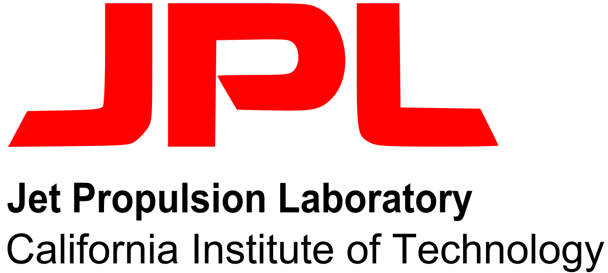

May 2026 - September 2026

NASA Jet Propulsion Laboratory
Incoming Research Intern
I will be joining the Jet Propulsion Laboratory as a research intern in May 2026, where I will work on multi-robot autonomy and exploration problems.